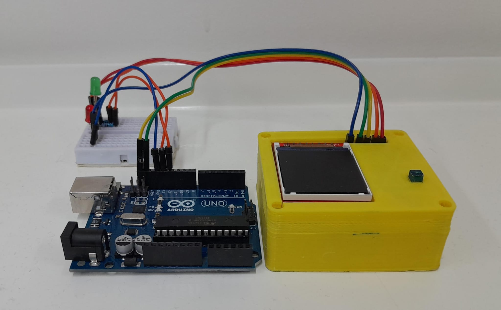
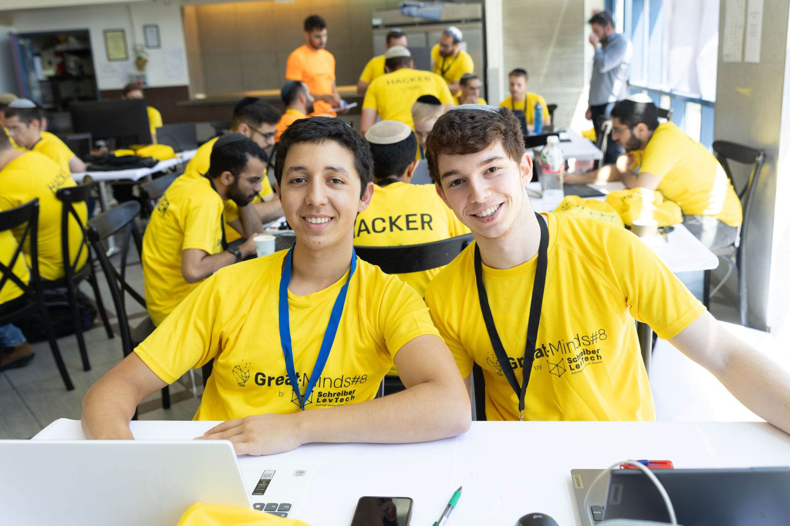

Avishai Gonen
I'm a
About
I'm a 19-year-old Computer Science graduate with a passion for cybersecurity, networking, and reverse engineering. I placed 2nd in the LevTech GreatMinds 8 Hackathon and specialize in CTF challenges and security research.
Resume
About Me
I'm a curious person with a strong passion for Computer Science, especially in cybersecurity and reverse engineering. Eager to serve in IDF special units, I aim to apply my skills and knowledge for meaningful contributions to enhance national security through the 8200 Unit of the Military Intelligence Directorate.
Contact: avishaigonen@gmail.com
LinkedIn: linkedin.com/in/avishai-gonen
GitHub: github.com/avishaigonen123
Education
B.Sc in Computer Science
Jerusalem College of Technology, Jerusalem, Israel
- Reverse Engineering: 100
- Operating System: 100
- Computer Networks: 99
- Final Grade: 98
Personal Projects
TIME SIDE CHANNEL ATTACK (TSCA) PROJECT
JCT, Jerusalem | 13/1/2024 – 22/7/2024
Implemented Time Side Channel Attacks (TSCA) to explore vulnerabilities in cryptographic systems using C++ (Arduino) and Python, enhancing expertise in cryptography, timing analysis, and embedded systems.
2ND PLACE IN GREATMINDS 8 HACKATHON AT JCT
GPS System for Emergency Response Teams | 22/6/2024 – 23/6/2024
Developed "Mikomander", a GPS system to prevent friendly fire incidents, earning 2nd place in the LevTech GreatMinds 8 Hackathon.
Languages
- Hebrew: Native Proficiency
- English: Full Professional Proficiency
Skills
- Python, C++, Java, JavaScript, Assembly
- Reverse Engineering, Web Hacking, SQL
Contact
Email: avishaigonen@gmail.com